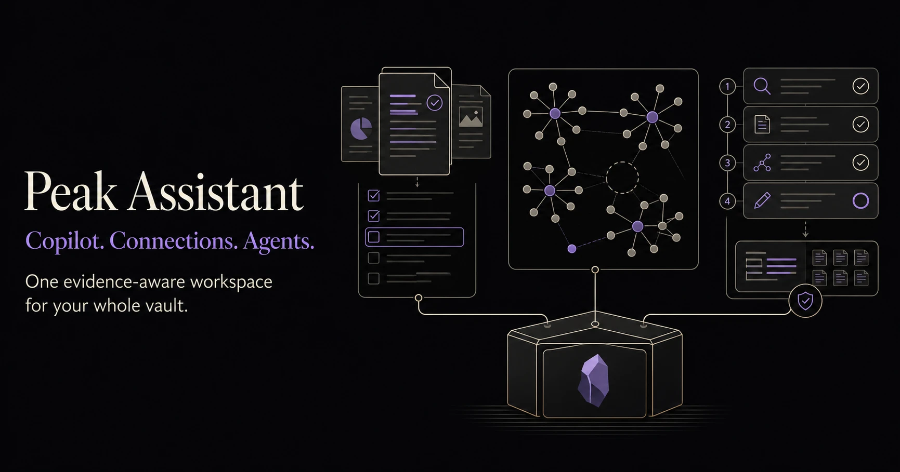

Search
Vault · AI · List · Tree · Graph

Product universe · visual directionSearch. Connect. Understand. Create. Keep the evidence in view.
Not another chat window.
One source of truth, connected across Search, Graph, Intelligence, Composer, and Chat.

Every system shares the same vault context and evidence trail.
Vault · AI · List · Tree · Graph
Files · structure · links · neighbourhoods
Results · semantic edges · hubs · gaps
Hubs · gaps · bridges · drift
Markdown · Copilot · native objects · review
Projects · agents · artifacts · branching
Files · workspaces · actions · Home
Models · tools · budgets · approvals
Image · video · music · voice
Providers · MCP · skills · traces
Datasets · formulas · charts · views
Setup · index · usage · storage
Status matters: source, preview, development, and research are not release claims.
One vault context moves from writing, to discovery, to longer agent work.
Ask, transform, compare, and review beside the exact source.
See what is related, why it matters, and where it connects.
Plan, search, use tools, and create reviewable artifacts.
Authored links, semantic relationships, direction, communities, hubs, and gaps stay distinguishable.

Results become an evidence map.
Local and two-hop neighbourhoods.
Hubs · gaps · bridges · orphans · drift
Immutable versions with evidence.
Nebula · Source–Sink · Healing Ray
Start with the real task.
Gather notes and paths.
Check reports, graphs, and sources.
Open Chat, Composer, or Atlas.
Focused surfaces, one shared vault context.

Projects, conversations, agents, resources, artifacts, and media.
Product design reference · status tracked in the roadmap.
Files, workspaces, dashboards, bookmarks, and grouped actions.
Accepted design reference.Built next, designed next, and research stay visibly separate.
A revision-safe spreadsheet and data surface for the vault.
Design mock · no production Dataset runtime yet.
Files stay yours. Indexes stay rebuildable. Provider boundaries stay explicit.
Read the storage modelLocal-first features carry no Peak fee.
Markdown remains the source of truth.
Indexes and caches stay on device.
Only configured services receive selected context.
Candidates and history keep edits reviewable.
Open source, desktop-only, and currently built from source.
Bring your own models. Provider costs stay yours. Optional support may come later; there is no payment link today.
Star on GitHubBuild the preview or follow the roadmap.